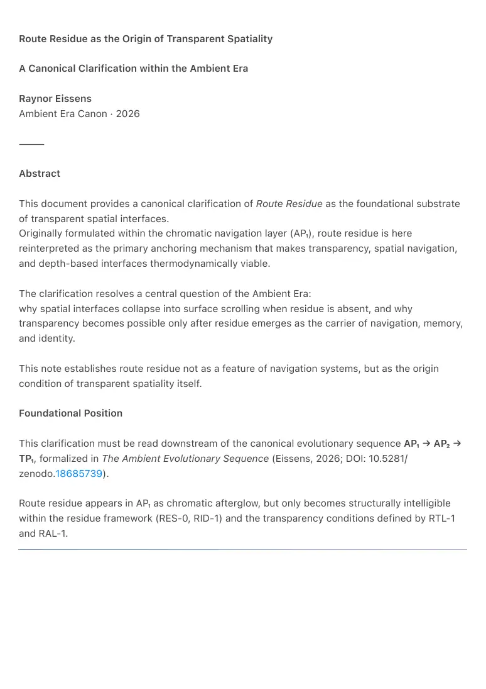
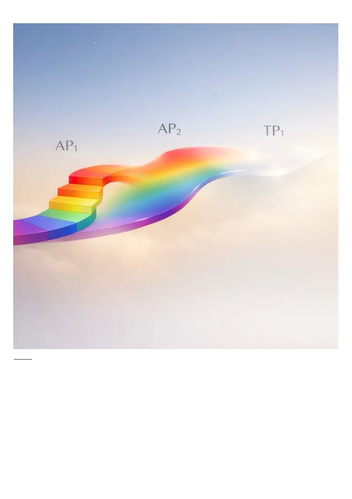

PDF page 1
Route Residue as the Origin of Transparent Spatiality
A Canonical Clarification within the Ambient Era
Raynor Eissens
Ambient Era Canon · 2026
⸻
Abstract
This document provides a canonical clarification of Route Residue as the foundational substrate
of transparent spatial interfaces.
Originally formulated within the chromatic navigation layer (AP₁), route residue is here
reinterpreted as the primary anchoring mechanism that makes transparency, spatial navigation,
and depth-based interfaces thermodynamically viable.
The clarification resolves a central question of the Ambient Era:
why spatial interfaces collapse into surface scrolling when residue is absent, and why
transparency becomes possible only after residue emerges as the carrier of navigation, memory,
and identity.
This note establishes route residue not as a feature of navigation systems, but as the origin
condition of transparent spatiality itself.
Foundational Position
This clarification must be read downstream of the canonical evolutionary sequence AP₁ → AP₂ →
TP₁, formalized in The Ambient Evolutionary Sequence (Eissens, 2026; DOI: 10.5281/
zenodo.18685739).
Route residue appears in AP₁ as chromatic afterglow, but only becomes structurally intelligible
within the residue framework (RES-0, RID-1) and the transparency conditions defined by RTL-1
and RAL-1.

PDF page 2
⸻

PDF page 3
1. Historical Placement: Route Residue in AP₁
Route residue was first articulated within AP₁ as an emergent phenomenon of chromatic
navigation:
• frequently traversed paths stabilized
• unused paths faded
• navigation occurred through repetition, not instruction
• space remembered movement without storage
At the time, route residue functioned as a navigation effect inside a chromatic world.
With the introduction of Residue Theory (RR₁) and later Transparency Architecture
(TP₁), it becomes clear that this early formulation captured something more
fundamental than initially recognized.
Route residue was not a secondary artifact of navigation.
It was the first appearance of residue as spatial memory.
⸻
2. The Core Insight
Spatial navigation is only stable when anchored in residue.
Or more precisely:
RAL-1 (Residue Anchoring Law)
Any spatial interface requires residue as anchoring substrate; without residue,
space degenerates into surface.
This insight reframes route residue as the origin condition of spatiality
beyond flat surfaces.
Without residue:
• space has no memory
• depth has no anchor
• navigation collapses into linear scrolling
• interaction becomes extractive and endless
With residue:
• space remembers presence
PDF page 4
• depth becomes navigable
• routes stabilize organically
• interfaces can dissolve without disorientation
⸻
3. From Chromatic Navigation to Transparent Spatiality
AP₁: Chromatic Anchoring
In AP₁:
• color functioned as location
• attractors appeared through chromatic gradients
• proximity was felt through color bleeding
• navigation was embodied and local
However, color remained a visible carrier.
Spatial memory was still expressed symbolically through hue.
Residue Emergence
As repetition accumulated:
• color began leaving afterglow
• meaning detached from representation
• paths persisted even as color faded
This transition marked the birth of route residue.
TP₁: Transparent Spatiality
In TP₁:
• color no longer needs to remain visible
• navigation occurs through residue traces
• the interface can dissolve
• space remains legible without UI
Transparency becomes possible only because route residue already anchors
space.
⸻
PDF page 5
4. Why 3D Interfaces Fail Without Residue
Many contemporary spatial interfaces attempt to introduce depth without residue.
This leads to:
• “fake space”
• endless panels
• volumetric doomscrolling
• disorientation
• cognitive overload
Thermodynamically, these systems attempt to create space without memory.
Without residue:
• depth is cosmetic
• space has no friction
• movement never resolves
• the user is trapped in perpetual traversal
Route residue resolves this by introducing spatial dissipation:
paths fade when unused, stabilize when meaningful, and release when complete.
⸻
5. Route Residue as Spatial Memory (Without Storage)
Route residue is not:
• a path database
• a map
• a log
• a trace to be archived
It is:
• a reversible imprint of presence
• a low-entropy memory of movement
• spatial coherence without storage
This makes route residue compatible with:
• RR₁ — Reversible Residue
• RID-1 — Residue Identity
• RTL-1 — Residue–Transparency Law
PDF page 6
Space remembers just enough to remain navigable, and no more.
⸻
6. Relation to Identity and Navigation
In transparent systems:
• identity cannot be symbolic
• location cannot be represented
• navigation cannot rely on coordinates
Residue provides a shared substrate:
• routes are identity-agnostic
• presence leaves imprint without ownership
• navigation emerges from collective use
• space belongs to no one and carries everyone
This explains why Residue Identity (RID-1) and route residue are structurally
aligned:
both are non-symbolic, reversible, and field-based.
⸻
7. Canonical Position within the Ambient Era
This clarification sits precisely between:
• RR-1 — Route Residue Operator
• RAL-1 — Residue Anchoring Law
• RTL-1 — Residue–Transparency Law
• TP₁ — Transparency Phone Architecture
It explains why transparency works, not just that it works.
⸻
PDF page 7
8. Canonical Definition
Route residue is the origin of transparent spatiality.
It is the minimal condition under which space can remain navigable after interface dissolution.
Without route residue, space collapses into surface.
With route residue, transparency becomes stable.
⸻
9. Conclusion
Navigation did not begin with destinations.
It began with paths.
Before maps, before coordinates, before interfaces,
there were routes worn into the world by repeated presence.
Route residue is not a new idea.
It is the oldest one.
The Ambient Era is the first time technology has learned to listen to it.